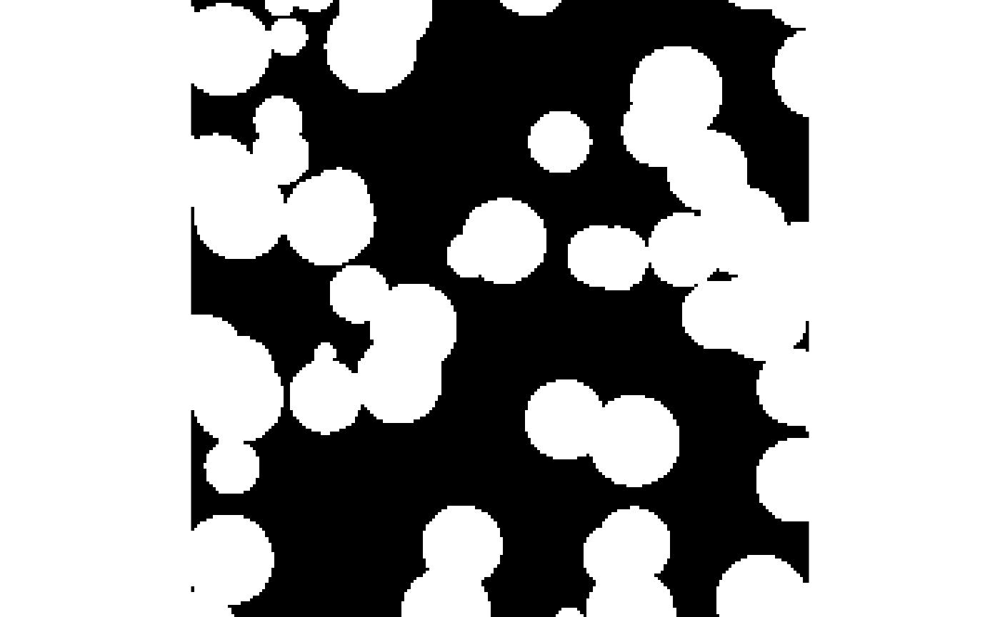

benchmarks.RmdCertain morphological quantities can be derived analytically for particular systems. We consider here those that are evaluated by Pant (2016), for fully penetrable spheres. First we use the fully penetrable spheres generator provided by the package, and we additionally load and attach the {ggplot2} and {tibble} packages, to use them later to add the analytical solutions to our plots:
library(morphology)
#> ! Package {morphology} is still in its experimental lifecycle stage.
#> ! Use at your own risk, and submit issues here:
#> ! <https://github.com/rogiersbart/morphology/issues>
library(ggplot2)
library(tibble)
set.seed(1234)
spheres <- gen_fully_penetrable_spheres()This generates a 200^3 voxel 3D array by default, with a sphere radius of 15, exactly like the one used by Pant (2016). The result looks as follows:

The two-point correlation function can be obtained by scaling the mean number of neighbours by the inverse neighbourhood and the proportion. Hence, instead of providing the mean number of neighbours for a given distance bin, it provides the probability that voxels with a given separation distance both belong to the category of interest (here the matrix phase). If we do this for a subset (1/25) of all x direction 1D subarrays, we can get rather close to the analytical result derived first by Weissberg (1963):
v2r <- function(x, r = 15) {
ifelse(x/r <= 2, 4/3*pi*(1+3/4*x/r-(x/r)^3/16), 8*pi/3)
}
spheres |>
look_at("voxels", of_category = 0) |>
look_in(direction = "x", every = 1/c(5, 1, 5)) |>
look_for(neighbours = 81, within = 40) |>
describe(mean, name = "{morphology}") |>
scale_by("inverse neighbourhood", "proportion") |>
visualise(x = "distance", y = "probability") +
geom_line(aes(x, y, colour = "analytical"), data = tibble(
x = 0:40,
y = exp(-(392/200^3*15^3)*v2r(x, r = 15))
))The cluster function has as additional requirement that the two
voxels are connected in 3D. Hence, if we repeat the above, but look at
"components" instead of "voxels", and ask for
describing only the connected cases, we end up with the cluster
function. Unfortunately there is no analytical solution for this, but
since fully penetrable spheres with the currently considered volume
fraction result in a fully connected matrix phase, the cluster function
should be the same as the two-point correlation function, which is
checked here:
spheres |>
look_at("components", of_category = 0) |>
look_in(direction = "x", every = 1/c(5, 1, 5)) |>
look_for(neighbours = 81, within = 40, from_border = FALSE) |>
describe(mean, connected = TRUE, name = "{morphology}") |>
scale_by("inverse neighbourhood", "proportion") |>
visualise(x = "distance", y = "probability") +
geom_line(aes(x, y, colour = "analytical"), data = tibble(
x = 0:40,
y = exp(-(392/200^3*15^3)*v2r(x, r = 15))
))
For the lineal path function, we just have to modify the kernel width of the kernel to determine connectivity, so that we look at 1D connectivity in the direction of interest. For this, an analytical solution is available from Lu and Torquato (1992), and we can reproduce it rather well:
spheres |>
look_at("components", of_category = 0, kernel_width = c(1, 3, 1)) |>
look_in(direction = "x", every = 1/c(5, 1, 5)) |>
look_for(neighbours = 81, within = 40, from_border = FALSE) |>
describe(mean, connected = TRUE, name = "{morphology}") |>
scale_by("inverse neighbourhood", "proportion") |>
visualise(x = "distance", y = "probability") +
geom_line(aes(x, y, colour = "analytical"), data = tibble(
x = 0:40,
y = mean(spheres == 0)^(1 + (3 * x / 4 / 15))
))
Related to the lineal path function is the chord length distribution,
where we do not look at the probability of two voxels to be connected
through a lineal path, but rather at the distribution of (maximum)
lengths of all lineal paths. This can be done by tabulating (here with
base R table()) the occurrences of component IDs in the
output from look_at() directly, while keeping the kernel
width the same for looking at 1D connectivity. Comparing with the
analytical expression by Torquato and Lu
(1993) gives us:
spheres |>
look_at("components", of_category = 0, kernel_width = c(1, 3, 1)) |>
_[["component"]] |>
table() |>
density(cut = 0, n = 50, bw = 0.5) |>
_[c("x", "y")] |>
transform(name = "{morphology}") |>
visualise(x = "chord length", y = "probability") +
geom_line(aes(x, y, colour = "analytical"), data = tibble(
x = 0:200,
y = -3/4/15*log(mean(spheres == 0))*mean(spheres == 0)^(3*x/4/15),
name = "analytical"
))
If we reduce the size of the dataset, using every, then
we can more easily (at least on my machine) compare against the
implementation provided by spatstat.explore::K3est() :
every <- 1/10
df <- spheres |>
look_at("voxels", of_category = 0) |>
look_in(direction = "xyz", every = every)
rsm_m <- df |>
look_for(neighbours = 100, within = 20) |>
describe(mean, cumulative = TRUE) |>
scale_by("inverse proportion", "inverse every")
pp <- spatstat.geom::pp3(df[[1]], df[[2]], df[[3]], rep(c(1, 200), 3))
rsm_s <- spatstat.explore::K3est(pp, rmax = 20, nrval = 21)
as_tibble(rsm_s) |>
_[, c(1, 3)] |>
setNames(c("x", "y")) |>
transform(name = "{spatstat.explore}") |>
rbind(rsm_m |> transform(name = "{morphology}")) |>
visualise(x = "distance", y = "reduced second moment")
It is a bit harder to get a decent match with the results of the
implementation provided by spatstat.explore::pcf3est(), as
it is using kernel smoothing, but with adjustments of the default
distance in morphology, and playing with the kernel width adjustment
factor, we can get pretty close:
every <- 1/5
df <- spheres |>
look_at("voxels", of_category = 0) |>
look_in(direction = "xyz", every = every)
pcf_m <- df |>
look_for(neighbours = 300, within = 20) |>
describe(mean, at = (0:21)-0.5) |>
scale_by("inverse neighbourhood", "inverse proportion", "inverse every")
pp <- spatstat.geom::pp3(df[[1]], df[[2]], df[[3]], rep(c(1, 200), 3))
pcf_s <- spatstat.explore::pcf3est(pp, rmax = 20, nrval = 21, adjust = 0.4, correction = "isotropic")
as_tibble(pcf_s) |>
_[, c(1, 3)] |>
setNames(c("x", "y")) |>
transform(name = "{spatstat.explore}") |>
rbind(pcf_m |> transform(name = "{morphology}")) |>
visualise(x = "distance", y = "pair correlation function")
As we work here with a regular grid of points instead of a point
pattern, the voxels of our category of interest are matched with
themselves, which results in an offset at distance zero, equal to the
proportion of that category (around 0.5 here), for the empty space
function. Typically, however, it starts at a cumulative probability of
zero. The implementation provided by
spatstat.explore::F3est() does allow for a discrete
approximation, however, and when we set the voxel side length to one for
comparing against our implementation, we can reproduce the {morphology}
behaviour:
df <- spheres |>
look_at("voxels", of_category = c(0, 1, 2), in_relation_to = 0) |>
look_in(direction = "xyz")
esf_m <- df |>
look_for(neighbours = 1, within = 20) |>
describe(mean, cumulative = TRUE)
df <- df |> subset(value == 2)
pp <- spatstat.geom::pp3(df[[1]], df[[2]], df[[3]], rep(c(1, 200), 3))
esf_s <- spatstat.explore::F3est(pp, rmax = 20, nrval = 21, vside = 1)
as_tibble(esf_s) |>
_[, c(1, 3)] |>
setNames(c("x", "y")) |>
transform(name = "{spatstat.explore}") |>
rbind(esf_m |> transform(name = "{morphology}")) |>
visualise(x = "distance", y = "cumulative probability")
For the (indicator) variogram, the quickest solution is to look into cross-category pairs here. Every distance bin becomes a Bernouilli variable, where the squared difference is 1 in case of different categories, and 0 when they are the same. The probability of a difference of 1 is equal to double the probability of 0-1 pairs (as this is the same as that for 1-0 pairs), and the probability of a difference of 0 is then the complement of that. With a final division by two to get to the semivariance, we get:
df <- spheres[1:40, 1:40, 1:40] |> reshape2::melt() |> as_tibble()
g <- gstat::gstat(
id = "phase",
formula = value ~ 1,
locations = ~ Var1 + Var2 + Var3,
data = df
)
vgm_g <- gstat::variogram(g, cutoff = 20, width = 1) |>
transform(x = dist, y = gamma, name = "{gstat}") |>
_[c("x", "y", "name")]
vgm_m <- spheres |>
look_at("voxels", of_category = 0, in_relation_to = 1) |>
look_in(direction = "x") |>
look_for(neighbours = 41, within = 20, from_border = TRUE) |>
describe(mean) |>
scale_by("inverse neighbourhood", "proportion") |>
transform(name = "{morphology}")
vgm_m$y <- (2 * vgm_m$y) * (1 - 2 * vgm_m$y) / 2
visualise(rbind(vgm_m, vgm_g), x = "distance", y = "semivariance")